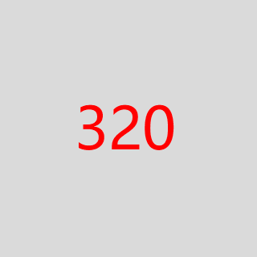

<!DOCTYPE html>
<html lang="en">
<head>
    <meta charset="UTF-8">
    <meta name="viewport" content="width=device-width, initial-scale=1">
    <title>srcset</title>
    <style type="text/css">
    	* { margin: 0; padding: 0; box-sizing: border-box; }
    	.cl:after { content: ''; clear: both; visibility: hidden; display: block; height: 0; }
    	.demo > .image { float: left; max-width: 100%; margin-bottom: 10px; }
    	.demo > .content { max-width: 100%; min-height: 96px; padding: 5px; background-color: #eee; vertical-align: top; }
    	@media screen and (max-width: 360px) {
    		.demo > .image { float: none; }
    		.demo > .content { margin-left: 0; }
    	}
    </style>
</head>
<body>
	<!-- 全新的智能srcset、sizes属性, w描述符 -->
	<!-- 好像是用w 来确定, 屏幕像素比的 -->
				   <!-- 符合 min-width: 600px. 调用图片200px 否则50vw -->
	
	<!-- 
			256px >= 320w  ===> img_default_1x.png
			375px >= 375w  ===> img/img_375.png
	 -->


	<!-- 其中1：
		sizes用来表示尺寸临界点，主要跟响应式布局打交道。语法如下：
		sizes="[media query] [length], [media query] [length] ... etc"

		如果sizes='128px', 则尺寸就一直是128px, 图片只会根据设备像素比发生变化.

		注意, 这里所有的都是指宽度值, 且单位任意, em, px, cm, vw, ...都是可以的, 甚至可以CSS3的calc 计算。例如：

		sizes="(max-width: 360px) calc(100vw - 20px), 128px"
		表示当视区宽度不大于360px 时候, 图片宽度为整个视区宽度减去20px 的大小。
	 -->

	<!-- <div class="demo cl">
				340px\128px对应 上面的 340w\128w
		<div class="content">当视图宽度不大于360像素的时候，左右布局变成上下布局，同时图片撑满屏幕显示。</div>
	</div>

	<div class="demo cl">
		
		<div class="content">当视图宽度不大于360像素的时候，左右布局变成上下布局，同时图片撑满屏幕显示。</div>
	</div> -->

	<!-- 1. 设备像素比的对应显示
			显示的是128w 的那张图片 (1x 桌面好像)
			图片256w 的那张 (2x iPhone5、iPhone6)
			而图片512w 的这张 (3x 4+x iPhone6 Plus)

		 2, sizes的媒体查询
	 -->
</body>
</html>